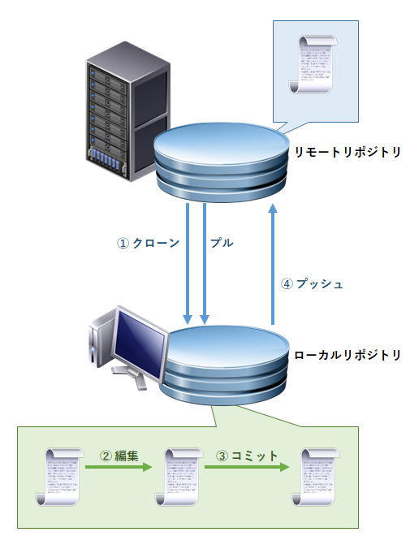
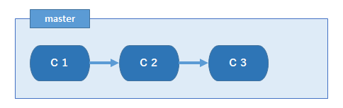

基本¶
単語¶
- バージョン管理システム
ファイル（主にソースファイル）の変更履歴を管理するシステム
いつ・誰が・どのファイルを・どの様な操作（追加、変更、削除）をしたのか等々、ファイルに関する各種履歴を管理する
同一ファイルの更新を制御し、デグレード（デグレ）や上書きによる更新内容の消失などを防止できる仕組みを持つ
変更履歴を使用して、ファイルを過去の状態に戻すことも可能
- Git
バージョン管理システムの 1 つ
他に Subversion （ SVN ）や CVS, Azure DevOps Server （旧 VSS : Visual SourceSafe / Microsoft ）などがある
- GitLab
Git を使用した Web サービス（ホスティングサービス）の 1 つ
他に GitHub や BitBucket などがある
GitLab は Web サービス以外にオンプレミス版がある
- リポジトリ
バージョン管理システムで扱うデータが登録されているエリア
バージョン管理システムで管理対象になるファイルや、各種管理情報の集まり
- リモートリポジトリ
サーバー上のリポジトリ
プロジェクトの結果を集約したリポジトリ
- ローカルリポジトリ
各作業者のパソコン上のリポジトリ
このリポジトリ内のファイルを操作する
リモートリポジトリが破損したとき、ローカルリポジトリで復旧が可能
- ブランチ
1 つのリポジトリ内に 1 つ以上のブランチが存在する
リポジトリ内のファイルに関する各種履歴（いつ・誰が・どのファイルを・どの様な操作（追加、変更、削除）をしたのか等）を記録したもの
コミットするたびに履歴は延びていく
ブランチの情報を元にファイルを過去のある時点の状態に戻すことができる
- Git クライアント（ Git クライアントソフト）
リポジトリを操作するためのソフトウェア（ツール）
Windows 上で使用できる GUI ツールとして GitHub Desktop や Sourcetree, TortoiseGit などがある
Visual Source Code （ VS Code ） など Git クライアントの機能を内蔵したツールもある
基本動作¶
基本サイクル¶
サーバー上のリモートリポジトリをクローンし、クライアントにローカルリポジトリを作成 ／ リモートリポジトリとローカルリポジトリの差異をリモートリポジトリからローカルリポジトリにプル
ローカルリポジトリ内のファイルを編集（追加・削除を含む）する
ローカルリポジトリ内で編集したファイルをコミット
ローカルリポジトリ内でコミットしたファイルをリモートリポジトリにプッシュ
クローン・プル・コミット・プッシュ¶
- クローン
作業を開始したときローカルには何もありません。作業ができるようよう最初にリモートリポジトリの全内容を複製し、ローカルリポジトリを作成・書き込む作業が必要です。この作業を「クローン」と呼びます。
- プル
通常、作業は複数人で進めるため、ランダムなタイミングでリモートリポジトリは更新されます。 結果、自分が知らないファイル（追加・削除）や編集内容が蓄積され、リモートリポジトリとローカルリポジトリに差異が発生します。この差違を解消するため、時々リモートリポジトリの内容をローカルリポジトへ取り込む作業が必要です。この作業を「プル」と呼びます。
- コミット
ローカルリポジトリ内のファイルの編集内容（追加・削除を含む）を確定する作業です。その時点のスナップショットを取ったり、コミット時のコメントなどのメタデータを保存します。
- プッシュ
コミット後のローカルリポジトリの内容をリモートリポジトリに反映します。この動作を「プッシュ」と呼びます。反映対象はコミットしたファイルです。
ブランチ¶
「ブランチ」はリポジトリ内に存在し、履歴を記録しているエリアです。デフォルトで用意されるブランチ、自分で作成するブランチなどがあります。
ブランチの種類¶
master ブランチ（リモートリポジトリ / ローカルリポジトリ）¶
最初のコミットを行うと master ブランチが作成されます（ “C1” は 1 回目のコミット（ commit ）の意味です）。
{kind=link}
コミットするたびにブランチ内の履歴は延びていきます。コミットを 3 回行った後の状態です。
{kind=link}
ブランチ内で現在指している履歴の場所を HEAD と呼びます。デフォルトはブランチの先頭の履歴を指しています。 HEAD を組み合わせたイメージです。
{kind=link}
HEAD が指す位置を変更すると、各ファイルは HEAD の位置が示す内容に変更されます。
ローカルリポジトリ内のリモートリポジトリのブランチのクローン¶
リモートリポジトリも内部に master ブランチ（リモートブランチ）を持ちます。リモートリポジトリをクローンしたとき、このブランチもクローンされてローカルリポジトリに格納されます。この格納されたブランチが origin/master ブランチです。 origin はクローン元のリモートリポジトリを指します。ブランチ内の履歴の場所を指す origin/HEAD もあります。
origin/master ブランチはリモートブランチの状態を維持し、プッシュ・プル・フェッチを実行したときに状態を更新（リモートブランチと同期）します。このように origin/master ブランチはリモートリブランチの状態を追いかけるので「リモート追跡ブランチ」または「追跡ブランチ」と呼びます。プル・プッシュ・フェッチはリモート追跡ブランチ経由で行われ、その結果リモート追跡ブランチはリモートブランチと同期します。
まとめ¶
ブランチ |
存在する場所 |
説明 |
ローカルブランチ |
ローカルリポジトリ |
|
リモート追跡ブランチ |
ローカルリポジトリ |
|
リモートブランチ |
リモートリポジトリ |
|
コミット¶
行っていること¶
現時点の状態をリポジトリに反映させる動作を「コミット」と呼びます。コミットは次の情報をリポジトリに保存します。
その時点のローカルリポジトリのスナップショット
コミット時のコメントなどのメタ情報
等々
{kind=link}
{kind=link}
{kind=link}
プッシュ¶
ローカルリポジトリの内容をリモートリポジトリに反映します。反映されるのはコミットしたファイルです。プッシュできるのは「 リモートブランチの履歴がリモート追跡ブランチの履歴よりも新しくない とき」です。先に他の人がプッシュ済みのときは、リモート追跡ブランチよりリモートブランチの履歴が新しいためプッシュに失敗します。 これは他の人の修正を壊さない（上書きして消さない）ための安全装置として働きます。
プッシュに失敗したときはプルを実行し、リモートリポジトリの変更内容をローカルリポジトリ取り込み、その後「コミット → プッシュ」を行います。
プル¶
リモートリポジトリとローカルリポジトリの差異をローカルリポジトリ内に反映します。反映対象がファイルの場合、ローカルリポジトリ内のコミット済みのファイルに反映されます。未コミットのファイルがが反映対象になった場合、プルに失敗します。こらは自分の修正を壊さない（上書きして消されない）ための安全装置として働きます。
プルに失敗したときは、ローカルリポジトリ内の対象ファイルをコミットするとか、削除または別のフォルダーへ移動します。その後もう一度プルをを行います。